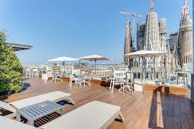
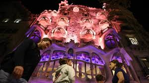
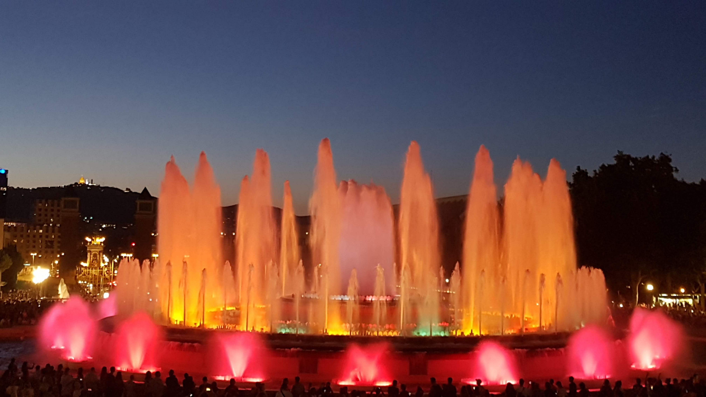
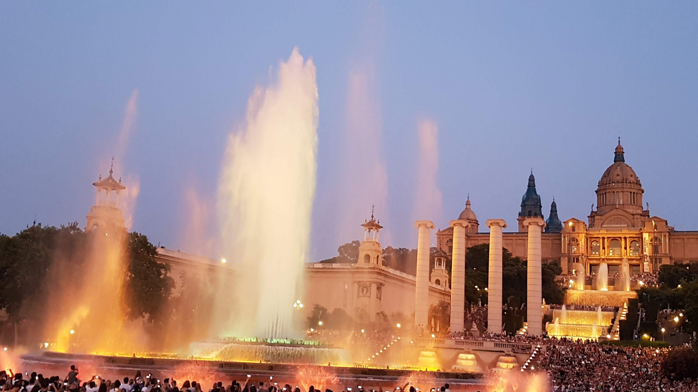
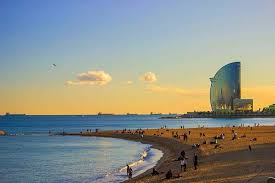

Este es mi itinerario de viaje
Basílica sagrada Família
Casa Batlló
Aquàrim de Barcelona
Fuente Màgica de Plaza Espanya
Andorra
Día 1
A las 9:45 salimos desde Santa Coloma y vamos a Sagrada Família con el metro. 12,20€ el ticket
A las 11:15 alojamos el hotel Sercotel Rosellon. 269€ 3 noches

A las 12:45 visitar la Basílica de la Sagranda Família 26€, 1 Entrada
A las 9:00 de la noche ir a visitar la Casa Batlló 29€, 1 Entrada

Día 2
Visitar el Aquàrium de Barcelona 25€, 1 Entrada
A las 4 a cenar en el restaurante Japonesa Robata.65€ Aproximadamente
Las 9:00 de la noche ir a ver la fuente mágica de Plaza Espanya
 Día 3
A las 1:00 ir a la playa de Barceloneta
Las 7:00 a cenar en el restaurante Can Plaça 30€ Aproximadamente